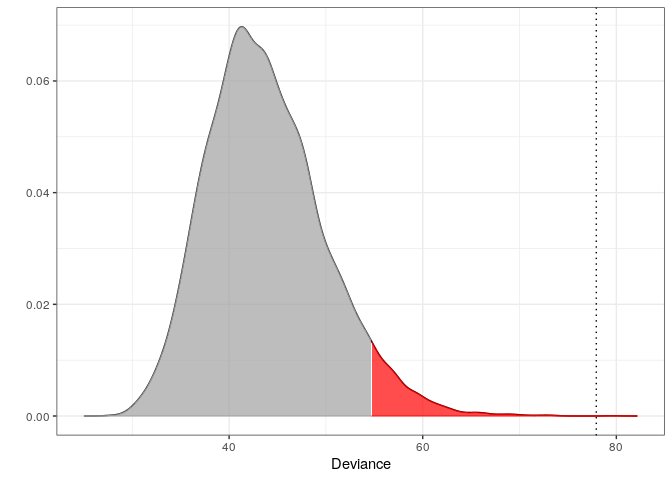
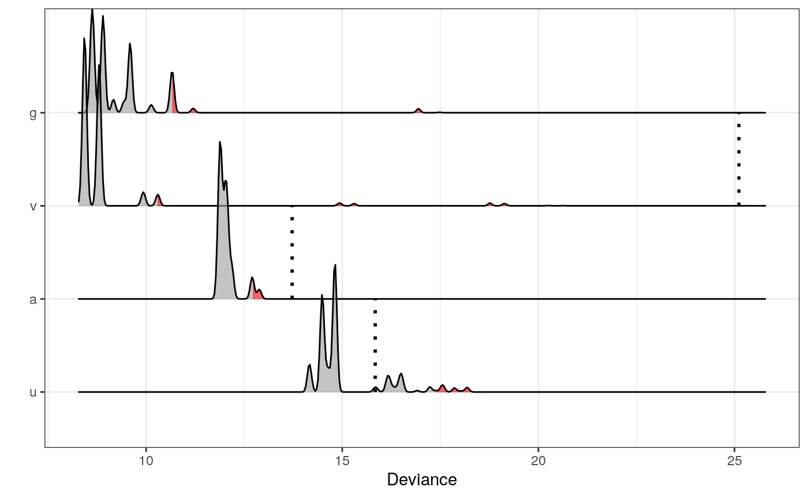
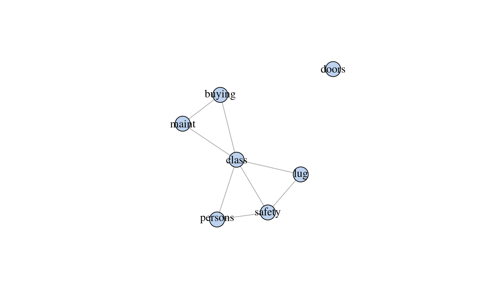

About molic
An R package to perform outlier detection in contingency tables (i.e. categorical data) using decomposable graphical models (DGMs); models for which the underlying association between all variables can be depicted by an undirected graph. molic also offers algorithms for fitting undirected decomposable graphs. Compute-intensive procedures are implemented using Rcpp/C++ for better run-time performance.
Getting Started
The documentation can be found at documentation.
You can install the current stable release of the package by using the devtools package:
The development version can be installed using:
devtools::install_github("mlindsk/molic@develop", build_vignettes = FALSE)
See e.g. the NEWS.md file at the develop branch to get a feeling of the upcoming features.
How To Cite
- If you want to cite the outlier method please use
@article{lindskououtlier,
title={Outlier Detection in Contingency Tables Using Decomposable Graphical Models},
author={Lindskou, Mads and Svante Eriksen, Poul and Tvedebrink, Torben},
journal={Scandinavian Journal of Statistics},
publisher={Wiley Online Library},
doi={10.1111/sjos.12407},
year={2019}
}
- If you want to cite the molic package please use
@software{lindskoumolic,
author = {Mads Lindskou},
title = {{molic: An R package for multivariate outlier
detection in contingency tables}},
month = oct,
year = 2019,
publisher = {Journal of Open Source Software},
doi = {10.21105/joss.01665},
url = {https://doi.org/10.21105/joss.01665}
}
Main Functions
The main functions in molic are
-
fit_graph which fits a decomposable graph. It has four types; forward selection (fwd), backward selection (bwd), tree (tree) and a combination of tree and forward (tfwd). Using adj_lst on an object returned by fit_graph gives the adjacency list corresponding to the graph. Similarly one can use adj_mat to obtain an adjacency matrix.
-
fit_outlier which can be used to test if an observation is an outlier in some categorical data. It needs an adjacency list or an object returned from fit_graph (a gengraph object).
-
fit_multiple_models which are useful when it is of interest to test for a new observation being an outlier in all classes in the given data.
Adjacency lists are important in molic. They are named list objects of the form
We can plot the corresponding graph by creating a gengraph object as
d <- data.frame(a = "", b = "", c = "", d = "") # A dummy dataframe
g <- gengraph(d, type = "gen", adj)
plot(g)
 The dummy
The dummy data.frame d is needed as an argument. This is because, in almost all cases a gengraph object is obtained from fit_graph which uses a data.frame to fit the graph. Notice, that isolated nodes (here d) is formed using the empty character character(0).
Finally, since the fit_outlier function assumes that adj is decomposable (the graph cannot have cycles of length greater than \(4\) without a chord) we can test for this explicitly
This can be useful, if the user has obtained an adjacency list using some other software than fit_graph. The fit_outlier will also raise a warning if the graph (adj) is not decomposable.
Example - Outlier Detection
To demonstrate the outlier method we use the car data set from the UCI Machine Learning Repository. The data have \(4\) classes that labels the evaluation of a car; unacceptable, acc, vgood and good. These classes are determined by the other variables in the data - and theses are not necessarily independent of each other and we must therefore “fit their association”.
Reading Data
library(dplyr)
car <- read.table("https://archive.ics.uci.edu/ml/machine-learning-databases/car/car.data",
header = FALSE, sep = ",", dec = ".") %>%
as_tibble() %>%
mutate_all(as.character)
colnames(car) <- c("buying", "maint", "doors", "persons", "lug", "safety", "class")
car_class <- car %>%
select(class) %>%
mutate(class = case_when(
class == "unacc" ~ "u",
class == "acc" ~ "a",
class == "vgood" ~ "v",
class == "good" ~ "g"
))
car <- car %>%
select(-class) %>%
to_single_chars() %>% # The outlier model assumes that all values are single characters!
as_tibble() %>%
bind_cols(car_class)
Defining Sub-Classes
vgood_cars <- car %>%
filter(class == "v") %>%
select(-class)
unacc_cars <- car %>%
filter(class == "u") %>%
select(-class)
Fitting The Interaction Graph
The associations between variables in the vgood_cars class is estimated with an interaction graph

A New Observation
We imagine that a new observation is given; here we take a random observation from the unacc class.
Outlier Test
Now we test if z is an outlier in vgood_cars. The interaction graph g_vgood is an input since it models the relationship in the vgood class
m <- fit_outlier(as.matrix(vgood_cars), z, g_vgood, trace = FALSE)
print(m)
#>
#> --------------------------------
#> Simulations: 10000
#> Variables: 6
#> Observations: 66
#> Estimated mean: 8.98
#> Estimated variance: 2.5
#> ---------------------------
#> Critical value: 10.29936
#> Deviance: 25.1124
#> P-value: 3e-04
#> Alpha: 0.05
#> <outlier, outlier_model, list>
#> --------------------------------
Thus the car is declared an outlier on a \(0.05\) significance level. We can visualize this by plotting the corresponding density of the deviance statistic as
 Since the observed deviance of the selected car, 25.1124022, is much larger than the critical value of 10.2993615 the car is declared an outlier. The red area represents the significance level (here \(\alpha = 0.05\)).
Multiple Tests
Here we make a test for z being an outlier in all four different car classes (the hypothesis are exclusive so no need for multiple hypothesis correction). The red areas are the significance levels (here \(\alpha = 0.05\)) and the dotted lines represents the observed deviance of z within the respective outlier test. We see that z is rejected in all but the true class of z. The odd looking densities is due to the fact that car does not contain that many variables. See other examples in the documentation of the vignettes. Notice also, for some tests, there are no dotted line. This simply means, that the observed deviance is larger than all values and it would disturb the plot if included.
mm <- fit_multiple_models(car, z, response = "class", alpha = 0.05)
#> 1 / 4 ...
#> 2 / 4 ...
#> 3 / 4 ...
#> 4 / 4 ...
plot(mm)
#> Picking joint bandwidth of 0.0489

Example - Variable Selection
The fit_graph procedure can be used as a variable selection tool. The idea is, to fit an interaction graph with the class variable of interest included. The most influential variables on the class variable is then given by the neighboring variables. Lets investigate which variables influences how the cars are labelled.

So the class of a car is actually determined by all variables except for doors (the number of doors in the car). The neighbors of class can be extracted as follows
adj_lst(G_car)$class
#> [1] "safety" "persons" "buying" "maint" "lug"
We can also state e.g. that the safety of a car is independent of the price (the buying varible) when the class of the car is known; this phenomena is also known as conditional independence.